1 Overview of R/R Studio, Examining Data Attributes, and Data Manipulation
Importing Data
Prepare Data
R is capable of reading data from most formats. The most common file types are…
- Excel (.xlsx)
- CSV (.csv)
- Text (.txt)
- JSON (.json)
- Other formats: SAS, Stata, SPSS, and others.
If you are unsure between certain file types on your computer, you can right-click on your file and click “Properties”. This should spell out what type of file your data is.
Below, are some useful tips for whenever you work with data files (for .csv and .xlsx files):
- Reserve the first row for headers (variable/column names)
- First column is often used to identify sampling units (ID or something else)
- Avoid variable names or fields with blank spaces; put an underscore
_instead. - Delete comments and notes from Excel
- Denote any missing values as
"."orNA - Avoid symbols such as
$, #, *, <, /, -
Set Your Working Directory
Before reading any data, it is good practice to set the R working directory to the location of the data or project. “Setting” the working directory essentially allows you to instruct RStudio to gain access to a certain folder on your computer and be able to grab various files from there.
- A working directory is a folder where you store your data, R code, etc.
- You can set a different directory for each project.
One way to set the working directory is through RStudio, where you can click Session and then to Set Working Directory. This should provide you a way to manually select your working directory.
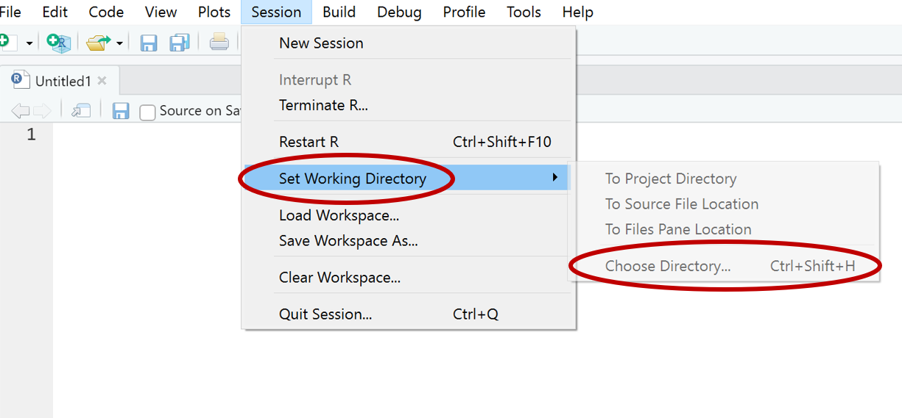
If you use this method, it is good practice to note somewhere in your R code file (via comment) of where you set your working directory for that code file.
An alternative way to set your working directory is to do it through R code. This requires an element called the path.
- A path is the full name that spells out the location of the working directory.
- The way this is written is different between Mac and Windows devices.
- Mac:
"Users/*username*/*folder name*" - Windows:
"C:\\Users\\*username*\\*folder name*"- Recently, RStudio in Windows can also read
/the same way as\\for directory paths. So the following will also work in Windows:C:/Users/*username*/*folder name*
- Recently, RStudio in Windows can also read
- Mac:
- The way this is written is different between Mac and Windows devices.
In order to declare the path, you can use the following code:
getwd() # Print out your current working directory
setwd("path to your folder") # Set your working directory. The current working directory is also depicted in the console location in RStudio and within the panel that contains the “File” tab.
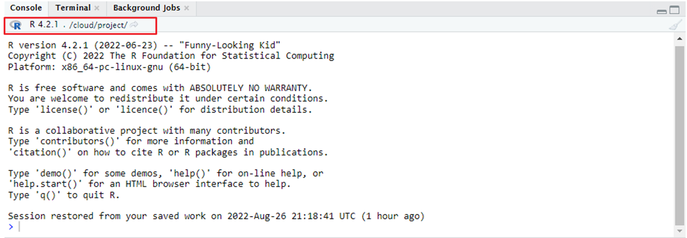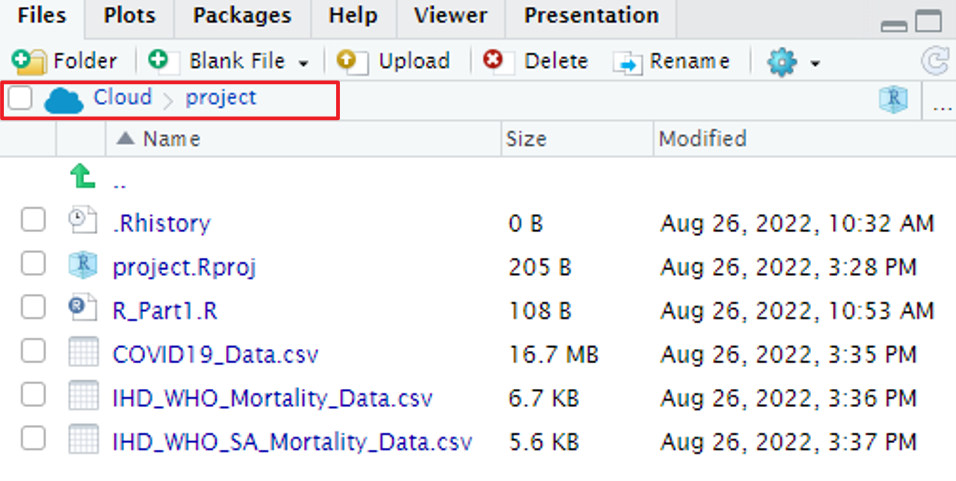
From the “Files” tab, you can go through the various folders in your computer. Navigate to the folder you want to set as your working directory from that panel. Once you have done so, click on a button that looks like a “cog”. This should open a drop-down menu that you can see multiple options. Some of these options are the following:
- “Copy Folder Path to Clipboard”
- “Set as Working Directory”
- “Go to Working Directory”
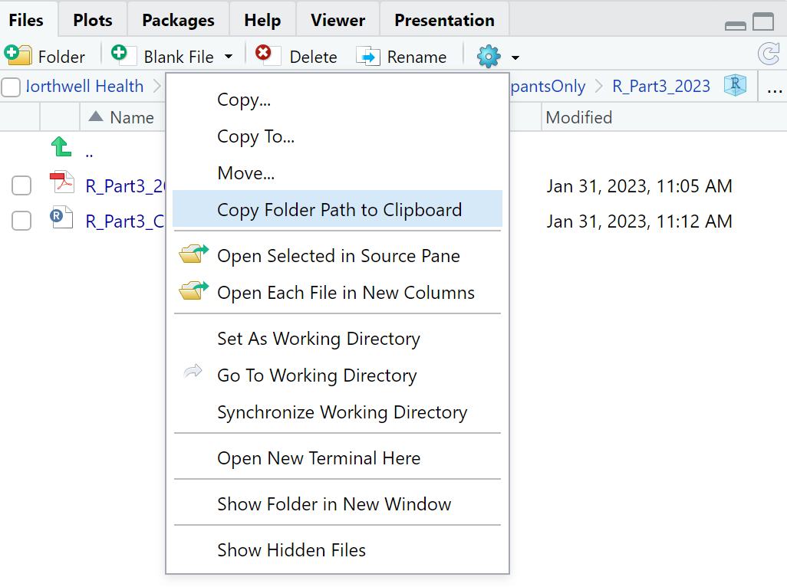
These are quick and easy ways to either get your folder path, or to set your working directory without code. However, it is highly suggested to code your working directory so that you know where all your files for that R code would have saved.
If you are done using a code file, you have the option to remove all objects from the current workspace (R memory) through the following code:
rm(list = ls())The rm() function is one that “removes” objects from the working environment. Or the “environment” tab in RStudio. The ls() function returns a vector of character strings with the names of the objects in the working environment. Altogether, all objects in the “Environment” tab in RStudio are removed.
An alternative way to do this is to click on the “broom” icon on the “Environment” tab as depicted below: 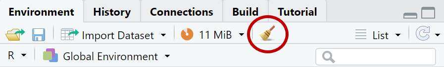
Read Data into R
To read or upload/import data into R, the data must be someplace on the computer where you can access. For this course, the data exists in the “Datasets” folder of the course OneDrive. Please either download the datasets or copy them to your own OneDrive. There are multiple ways to read data into R. One method is to do it through R Code, and the other method is to do it manually under the Files tab.
Read .CSV Files
.CSV files are also known as comma-separated files. They can be read through various different functions provided by various packages.
read.csv(): This function comes from thebasepackage and is already installed in R.read_csv(): This function comes from thereadrpackage.- This function runs faster for data files of size \(\ge\) 1 MB.
fread(): This function comes from thedata.tablepackage.- Reads data faster than
read.csv()andread_csv(). - More efficient for large data files.
- Reads data faster than
# Reading .CSV files with read.csv()
df <- read.csv("path to file here/my_data_filename.csv")
# Reading .CSV files with read_csv()
library(readr)
df <- read_csv("path to file here/my_data_filename.csv")
# Reading .CSV files with fread()
library(data.table)
df <- fread("path to file here/my_data_filename.csv")If you have already set your working directory, you don’t need to type the full path name. You can type just the file name and it should be able to read in the data from that location.
setwd("path to folder")
read.csv("mydata.csv")The functions listed above have various other options that have pre-set default values that you do not need to input. For more example, read the documentation for this by running ?read.csv().
For this R course series, the function that you will be using is read.csv() provided from the base package. If you want try your hand at using the other functions, make sure you have installed and loaded the package tied with the respective function.
Read Excel Files
read_excel(): This function comes from thereadxlpackage.- Good to use with the libraries
dplyrandtidyverse. - Calls the
excel_format()to determine if the path to the file is.xlsor.xlsx.
- Good to use with the libraries
library(readxl)
dat <- read_excel("mydata.xls") # for xls files
dat <- read_excel("mydata.xlsx") # for xlsx filesRead .TXT Files
.txt files, or tab-delimited text files, can be read using the read.table() function, which automatically comes with R. This function works similarly to read.csv() but starts with header = FALSE, indicating that there are no column names in the file. If the data does have a header, specify this with header = TRUE in your code like that demonstrated below:
dat <- read.table("mydata.txt", header = TRUE)Read/Import Data Manually
For the manual method, go to the “Files” tab and to the folder that contains your datasets. Once there, you can click on the dataset, which opens up a few options, one of them being “Import Dataset…”.
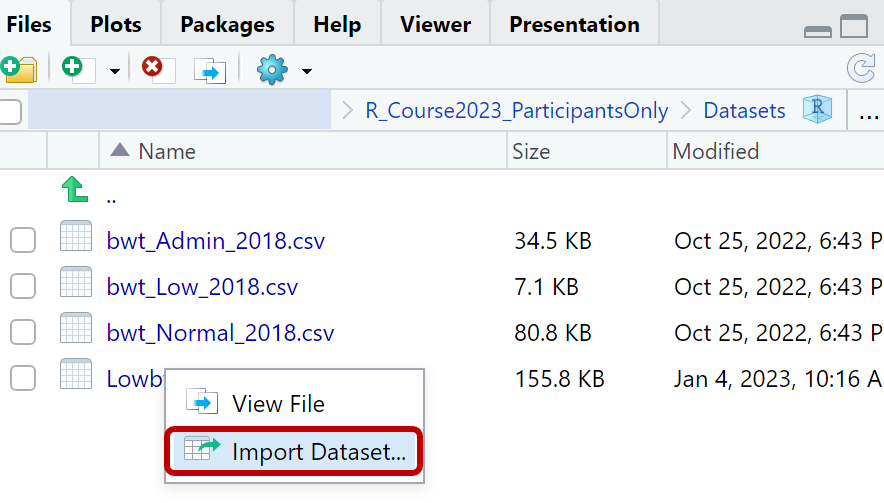
Clicking on the “Import Dataset…” button as shown above should open up a new window within RStudio like that of below. It also gives you a preview of what the data will look like and what kind of data type the data values are. If this is the data file that you would like to import/read, then click on the “Import” button at the bottom of that window. Typically, this method will try to automatically determine which library and function to use to read the data file based on file type (such as .xlsx, .csv, and more).
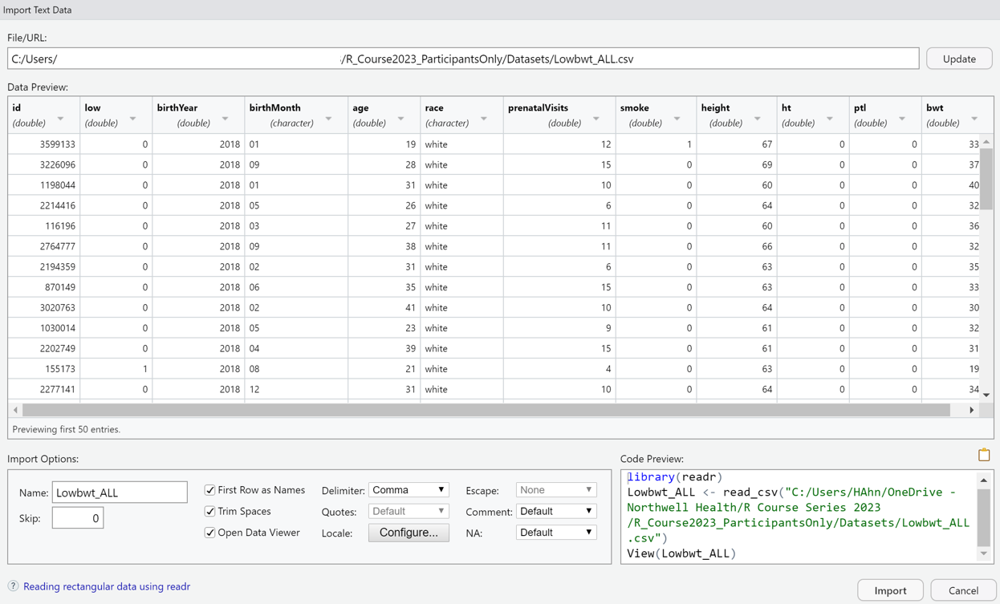
This method works if you are not entirely confident with code, but it is better practice to write and run your code so that you can replicate your own work from a single R Script file.
Load Data from R Packages
There are more than 100 datasets supplied with R (in package dataset). To see the list of datasets currently available, use the function data().
If a package containing data has been already been loaded by library(), its datasets are automatically included in the search (e.g. esoph).
# Load data "esoph" from the R package "datasets"
data(esoph, package = "datasets")
esoph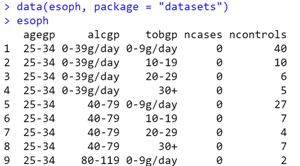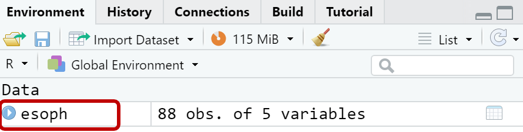
Data Description
Before running any analysis, it is crucial to examine the data. For instance, you can look to see how many different variables/features are in the data, the variable data types, number of observations, etc.
To see what kind of variables are in the dataset, you can use either of the names() or colnames() functions.
- The difference between the two functions is that
colnames()can get column names of both data frames and matrices.names()can only grab column names from data frames.
# colnames(esoph) # Using the colnames() function
names(esoph) # Using the names() function[1] "agegp" "alcgp" "tobgp" "ncases" "ncontrols"To determine the shape or dimension of the data, you can use the following functions:
# Get dimension of a matrix, array, or data frame.
dim(esoph) [1] 88 5# Get number of rows inside a vector, array, or data frame.
nrow(esoph) [1] 88# Get number of columns inside a vector, array, or data frame.
ncol(esoph) [1] 5If you want to preview your data that you read, but the data size is big, you can use either the head() or tail() functions to see just n number of rows of your data. Both functions display 6 rows of data if the n value is not specified.
# Look at the first 6 rows
head(esoph) agegp alcgp tobgp ncases ncontrols
1 25-34 0-39g/day 0-9g/day 0 40
2 25-34 0-39g/day 10-19 0 10
3 25-34 0-39g/day 20-29 0 6
4 25-34 0-39g/day 30+ 0 5
5 25-34 40-79 0-9g/day 0 27
6 25-34 40-79 10-19 0 7# Look at the last 6 rows
tail(esoph) agegp alcgp tobgp ncases ncontrols
83 75+ 40-79 20-29 0 3
84 75+ 40-79 30+ 1 0
85 75+ 80-119 0-9g/day 1 0
86 75+ 80-119 10-19 1 0
87 75+ 120+ 0-9g/day 2 0
88 75+ 120+ 10-19 1 0If you want to access specific rows and/or columns of your data, you can use the syntax data[row, col].
rowcan be a singular number, or a list of numbers to represent the row index.- The row number is from 1 to the total number of rows in the dataset.
colcan be a singular number, or a list of numbers to represent the column index.- The column number is from 1 to the total number of columns in the dataset.
- If a list of numbers are used to represent the row or column indices, they can be written in the following ways:
- If the list is a series of consecutive numbers, it can be written as
x:ywhere the:represents the word “to”. - If the list is not a series, you can put it inside a vector of
c(x, y).
- If the list is a series of consecutive numbers, it can be written as
Instead, if you wanted to look at specific rows/columns of your data, you can use the syntax of data[row, col].
# Get specific rows of the esoph data
esoph[4,]
esoph[1:3,]
esoph[c(1,2,7),]
# Get specific columns of the esoph data
esoph[,1]
esoph[,2:3]
esoph[,c(1,3)]
# Get specific rows and columns of the esoph data
esoph[4,3]
esoph[1:3, 1:2]For columns, there is an alternative way to access them. If you use the $ symbol, it selects that specific column for ease of use.
# Using $ to access a certain column
age <- esoph$agegpMissing Data
Datasets can sometimes have little to a lot of missing data. Typically, these are represented in many ways, but the most common type in R are:
NA""
To check if you have any missing data in your data frame you can use,
anyNA(esoph) # check for any missing values[1] FALSEThe code above will return TRUE if there is any missing data or FALSE if you do not. If there is any missing data, you can determine where/how frequently missing data occurred:
is.na(): returns the data frame as a matrix of whether the data in a certain row and column is aNAvalue.
rowSums(is.na()): returns the total number ofNAvalues in each row.colSums(is.na()): returns the total number ofNAvalues in each column.which(is.na()): returns the vector index of interest forNAvalues.
# Making random dataset
dat <- data.frame(x1 = rnorm(5),
x2 = c(NA, rnorm(2), NA, NA),
x3 = c(NA, rnorm(4)))
dat
# Check where and how frequently missing observed
is.na(dat)
rowSums(is.na(dat))
colSums(is.na(dat))
which(is.na(dat$x2)) # Return row index where NA values are located
which(is.na(dat[1,])) # Return column index where NA values are locatedThe codes above will generate the following output:
knitr::include_graphics(rep("Images/na_idx.png"))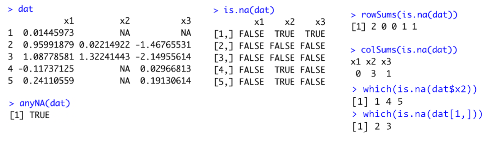
Data Class
To further explore and “describe” your dataset, you can see what kind of data “class” your data consists of. This “class” refers to what kind of data type certain column values are. If you are unfamiliar with the data type that exist in R, please go to the section “Introduction to R” in this webpage to read a summary of this information.
To examine what data types exist for all columns you can use the str() function. Here is an example using an example dataset:
low_birth_all <- read.csv("Lowbwt_ALL.csv")
str(low_birth_all)'data.frame': 3671 obs. of 12 variables:
$ id : int 3599133 3226096 1198044 2214416 116196 2764777 2194359 870149 3020763 1030014 ...
$ low : int 0 0 0 0 0 0 0 0 0 0 ...
$ birthYear : int 2018 2018 2018 2018 2018 2018 2018 2018 2018 2018 ...
$ birthMonth : int 1 9 1 5 3 9 2 6 2 5 ...
$ age : int 19 28 31 26 27 38 31 35 41 23 ...
$ race : chr "white" "white" "white" "white" ...
$ prenatalVisits: int 12 15 10 6 11 11 6 15 10 9 ...
$ smoke : int 1 0 0 0 0 0 0 0 0 0 ...
$ height : int 67 69 60 64 60 66 63 63 64 61 ...
$ ht : int 0 0 0 0 0 0 0 0 0 0 ...
$ ptl : int 0 0 0 0 0 0 0 0 0 0 ...
$ bwt : int 3345 3730 4090 3200 3600 3255 3577 3374 3005 3245 ...- From this example, the data has 3,671 rows (observations) and 12 columns (variables).
- All columns, except race (chr = character), contain numeric values (int = integer)
If, by any chance, you wanted to look at only one column’s data type, then you can use the class() function (as demonstrated in the “Introduction to R” chapter). Here is an example using the data above:
class(low_birth_all$age)[1] "integer"Count and Proportions of Data
In R, there is a way to tabulate your data with the count/proportion information using the table() and prop.table() functions respectively.
- Generally, used for categorical/binary variables, not for continuous variables.
- But even for continuous variables, this might be useful.
- The
table()function provides the count for each unique value in a column.
# Example: tabulate variable smoke from data low_birth_all:
table(low_birth_all$smoke)
0 1
3427 244 # Example: tabulate variable race from data low_birth_all:
table(low_birth_all$race)
black other white
573 390 2708 If you wanted to tabulate the data across two columns, you are able to do this using the table() function as well:
table(low_birth_all$smoke, low_birth_all$race)
black other white
0 540 372 2515
1 33 18 193But if you wanted to get the proportion of the count information, you can use the prop.table() function after running the table() function.
# Example: tabulate variable smoke from data low_birth_all:
prop.table(table(low_birth_all$smoke)) # Decimal Version
0 1
0.9335331 0.0664669 prop.table(table(low_birth_all$smoke)) * 100 # Percent Version
0 1
93.35331 6.64669 Summary Statistics
For continuous variables, you can use the function summary() to get the summary statistics (distribution) of the data. This function returns the following values:
- Minimum
- 1st Quartile
- Median
- Mean
- 3rd Quartile
- Maximum
# Example: summarize variable prenatalVisits
summary(low_birth_all$prenatalVisits) Min. 1st Qu. Median Mean 3rd Qu. Max.
0.00 9.00 12.00 11.36 14.00 49.00 If you were to call this function on a categorical column, the number of observations, and column class are returned. Here is what happens when you call summary() on the entire data frame.
summary(low_birth_all) id low birthYear birthMonth age race prenatalVisits smoke
Min. : 1189 Min. :0.0000 Min. :2018 Min. : 1.000 Min. :14.00 Length:3671 Min. : 0.00 Min. :0.00000
1st Qu.: 980184 1st Qu.:0.0000 1st Qu.:2018 1st Qu.: 4.000 1st Qu.:25.00 Class :character 1st Qu.: 9.00 1st Qu.:0.00000
Median :1965753 Median :0.0000 Median :2018 Median : 7.000 Median :29.00 Mode :character Median :12.00 Median :0.00000
Mean :1934350 Mean :0.0918 Mean :2018 Mean : 6.654 Mean :29.17 Mean :11.36 Mean :0.06647
3rd Qu.:2871162 3rd Qu.:0.0000 3rd Qu.:2018 3rd Qu.:10.000 3rd Qu.:33.00 3rd Qu.:14.00 3rd Qu.:0.00000
Max. :3799040 Max. :1.0000 Max. :2018 Max. :12.000 Max. :50.00 Max. :49.00 Max. :1.00000
height ht ptl bwt
Min. :50.00 Min. :0.00000 Min. :0.00000 Min. : 280
1st Qu.:62.00 1st Qu.:0.00000 1st Qu.:0.00000 1st Qu.:2950
Median :64.00 Median :0.00000 Median :0.00000 Median :3315
Mean :64.21 Mean :0.02179 Mean :0.03133 Mean :3257
3rd Qu.:66.00 3rd Qu.:0.00000 3rd Qu.:0.00000 3rd Qu.:3628
Max. :78.00 Max. :1.00000 Max. :1.00000 Max. :5530 Data Manipulation
Subset Data
For this section the library dplyr is used for data selection and manipulation.
- If this library is not already installed, please do so.
dplyr is a tool to help work with data frame like object for multiple purposes, but mainly for data manipulation.
To subset the data by columns, you can select variable(s) that you want using the following functions:
select(mydata, colname): In the data tablemydata, take out thecolnamecolumn.select(mydata, colname1, colname2, ...): In the data tablemydata, take only the columnscolname1, colname2, ....
library(dplyr)
select(airquality, Ozone)
select(airquality, Ozone, Wind, Temp)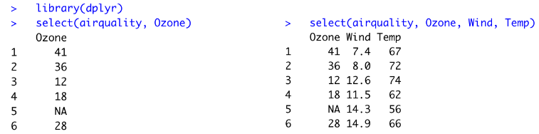
The fun thing about dplyr is that you can pass the functions through the %>% symbol. This notation is called the pipeline operator and essentially sends along the input value from the left to the next expression/function(s). Typically, that value is the data frame.
Here is the same code as above, but written differently:
airquality %>%
select(Ozone, Wind, Temp) Ozone Wind Temp
1 41 7.4 67
2 36 8.0 72
3 12 12.6 74
4 18 11.5 62
5 NA 14.3 56
6 28 14.9 66When you want to subset the data by columns, but want to see all columns but a specific column(s), you can use the - symbol within the select() function:
select(airquality, -Month, -Day) Ozone Solar.R Wind Temp
1 41 190 7.4 67
2 36 118 8.0 72
3 12 149 12.6 74
4 18 313 11.5 62
5 NA NA 14.3 56
6 28 NA 14.9 66If you wanted to select only certain rows of the data to subset, you can use the slice() function instead.
# Example: select rows 1 to 5 from airquality
slice(airquality, 1:5)
# Example: select rows 4, 7, and 18 from airquality
slice(airquality, c(4, 7, 18))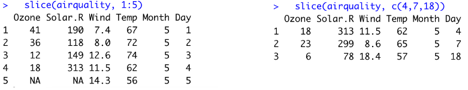
An alternative method is to use the filter() function to do the same thing as well. For this function, you want to put in the condition or a criteria using the operators for logical comparisons.
Here is a review of operators in R:
Logical Operators
&: element-wise AND operator.|: element-wise OR operator!: NOT operator
Logical Comparisons
<: Less than>: Greater than<=: Less than or equal to>=: Greater than or equal to==: Equal to!=: Not equal tois.na()is NA!is.na()is not NA
# filter(airquality, Month==7 & Wind < 6) # the same function different way to write it.
airquality %>%
filter(Month == 7 & Wind < 6) Ozone Solar.R Wind Temp Month Day
1 135 269 4.1 84 7 1
2 64 175 4.6 83 7 5
3 77 276 5.1 88 7 7
4 97 272 5.7 92 7 9
5 79 187 5.1 87 7 19In dplyr using the %>% also allows to combine multiple dplyr functions for a single code run. You can write multiple lines of code with multiple functions in each new line, followed up with %>% after the function.
For example, if you wanted to use both select() and filter() functions, then you can write it like the following:
low_birth_all %>%
select(-birthYear, -birthMonth) %>%
filter(race == "black" & age > 41 & smoke == 0) id low age race prenatalVisits smoke height ht ptl bwt
1 3189399 0 43 black 5 0 67 0 0 3527
2 741026 0 42 black 16 0 66 0 0 2760
3 1653090 0 42 black 11 0 68 1 0 3515
4 798266 0 43 black 5 0 64 0 0 3657
5 1350086 0 42 black 23 0 64 0 1 3220
6 3151450 0 45 black 11 0 66 0 0 3170
7 471085 1 50 black 10 0 67 0 1 1830Order Data
To order rows of data according to one of the variables, you can use the function arrange(mydata, ordering_var). By default, it sorts the row from smallest to largest numerically, or alphabetically if it’s sorting a character-type column.
arrange(low_birth_all, id) id low birthYear birthMonth age race prenatalVisits smoke height ht ptl bwt
1 1189 0 2018 2 35 other 18 0 67 0 0 3040
2 1834 0 2018 3 26 white 8 0 62 0 0 2744
3 3244 0 2018 4 29 white 12 0 62 0 0 3816
4 5640 0 2018 8 24 white 13 0 61 0 0 3465
5 5886 0 2018 8 30 white 4 0 67 0 0 3459
6 6128 0 2018 8 26 black 11 0 63 0 0 3540It is possible to sort the rows in the opposite direction (descending order) using the desc() function inside arrange().
arrange(low_birth_all, desc(id))You can also sort rows by multiple columns by putting all column names into arrange().
arrange(low_birth_all, smoke, desc(age))Rename Variables
In R, there are multiple ways to rename columns. Without dplyr, you can use colnames() and rename the columns like below:
# Rename all columns
colnames(low_birth_all) <- c("ID", "Low", "Birth_Year", "Birth_Month", "Age", "Race", "Prenatal_Visits", "Smoke", "Height",
"HT", "PTL", "BWT")
# Rename only the third column
colnames(low_birth_all)[3] <- "Birth_Year"You can also rename columns through dplyr function rename() using the following syntax: rename(mydata, new_name_var = old_name_var)
rename(low_birth_all, smoking_status = smoke)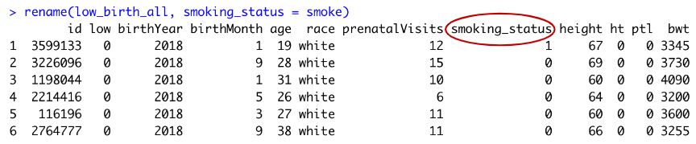
You can also rename multiple columns at once through this function by listing out the new column names:
low_birth_all %>%
rename(smoking_status = smoke,
patientID = id,
low_binary = low)Data Transformation
Sometimes, you want to create new variable(s) derived from existing ones for your analysis purposes (e.g. apply a log transformation to a skewed variable). To do so, you can use the mutate(mydata, new_name_var = transform_old_var) syntax:
mutate(low_birth_all, log_age = log(age))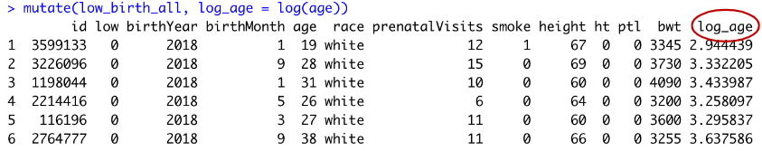
Here are some other operations that you can do within mutate. The options in the lists are only a handful of the many different ways you can transform the data:
- Basic Operations:
log(): natural logarithmsqrt(): square rootx^n: exponentexp(): exponential
- Matrix Operations:
A%*%B: matrix multiplicationt(A): matrix transposedet(A): determinant of Adiag(A): diagonal of Asolve(A): matrix inverse
If-Else Function
An if-else function is used if you want the assignment statement to apply to some observations and not to all. You need to specify,
- The logical condition we want to test
- What should happen in case the logical condition is TRUE
- What should happen in case the logical condition is FALSE
The R function for the if-else function can be written as ifelse(condition, yes, no).
# Example: Create a binary category (1 if < 30; 0 otherwise) in data low_birth_all
low_birth_all$binary_age <- ifelse(low_birth_all$age < 30, 1, 0)
head(low_birth_all)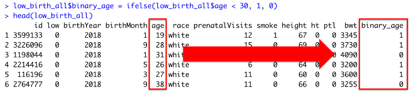
It is possible to use this function to create multiple categories. This will be calling an ifelse() function inside a different ifelse() function. Here is an example:
# Example: Create three age categories (<20, 20-29, 30+) in data low_birth_all
low_birth_all$age_category <- ifelse(low_birth_all$age < 20, "<20",
ifelse(low_birth_all$age >= 20 & low_birth_all$age < 30, "20-29", "30+"))
head(low_birth_all)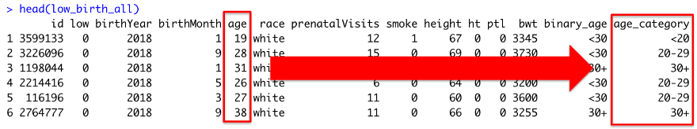
Combine Data Sets (Stacking)
In R, there are ways to combine multiple data sets that have the same variables but different observations.
- Combine by rows
- Combine by columns
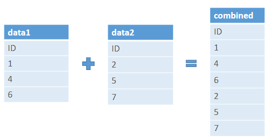
To combine by rows, you can use the function rbind(mydata1, mydata2). The rbind() function takes in two different data types with the same variables. One thing to note is that the column names must match, otherwise, the stacking will not work.
df1 = data.frame(var1 = c(0, 3, 1, 2),
var2 = c(1, 1, 1, 2),
var3 = c(0, 9, 0, 0))
df2 = data.frame(var1 = c(2, 2, 4),
var2 = c(3, 1, 9),
var3 = c(7, 3, 5))
rbind(df1, df2)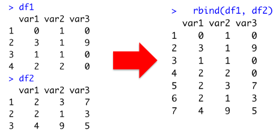
Here is what happens when the column names if the column names of the two data frames do not match:
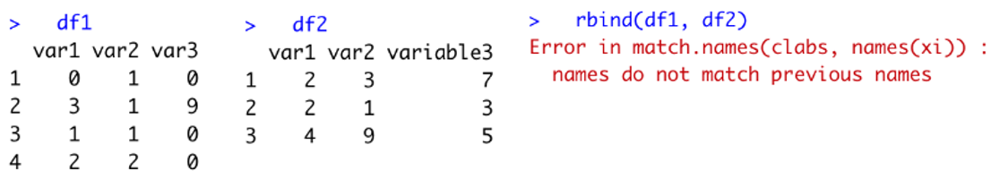
Merge Data Sets
Merging is a concept similar to the combining of dataframes, but works differently. Typically, a “merge” joins two data frames from different sources or at different times.
Here are some requirements to merge two data sets:
- Both data frames must have at least one variable in common (either character or numeric)
- If character, make sure the categories have the same spelling (i.e., country names, etc.)
- If numeric, make sure the units are the same (i.e., kg vs lbs)
Example: A study was conducted to identify risk factors for low infant birth weight using data frame 189 live births at Bay State Medical Center in Massachusetts. Low birthweight was defined as a <2500 grams.
- We have one data set for low birthweight-babies (
bwt_Low_2018.csv) and another for normal birthweight babies (bwt_Normal_2018.csv).id= ID number of infantsmoke= smoking during pregnancy = 1, if yes; 0 if noage= mother’s age in years
- We have a separate data set with data on number of visits (
bwt_Admin_2018.csv).id= ID number of infantvisits= number of physician visits during 1st trimester = 0 if none; 1 if one; 2 if two or more
Here is the solution:
# Combine the low birthweight babies (bwt_Low_2018.csv) with the normal birthweight babies (bwt_Normal_2018.csv).
# This is the combo_row data from above
low_birth = read.csv("bwt_Low_2018.csv")
norm_birth = read.csv("bwt_Normal_2018.csv")
combo_row = rbind(low_birth, norm_birth)
# Merge the combo_row data with data on # of visits (bwt_Admin_2018.csv).
# id = ID number of infant
# visits = number of physician visits during 1st trimester = 0 if none; 1 if one; 2 if two or more
admin_birth = read.csv("bwt_Admin_2018.csv") # Read admin data
birth_final = merge(combo_row, admin_birth, by="id") # merge the combo and admin data by common "id" column
birth_final %>% arrange(id) # sort by id
names(birth_final) # Provide column names
head(birth_final) # Display first 6 rows of merged data frame